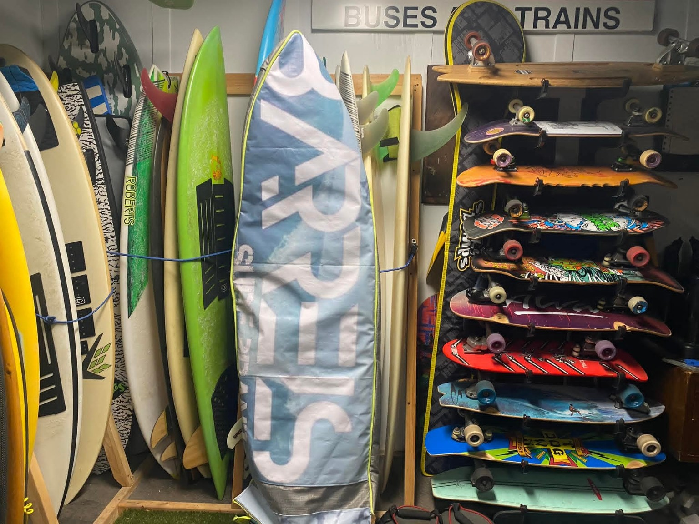
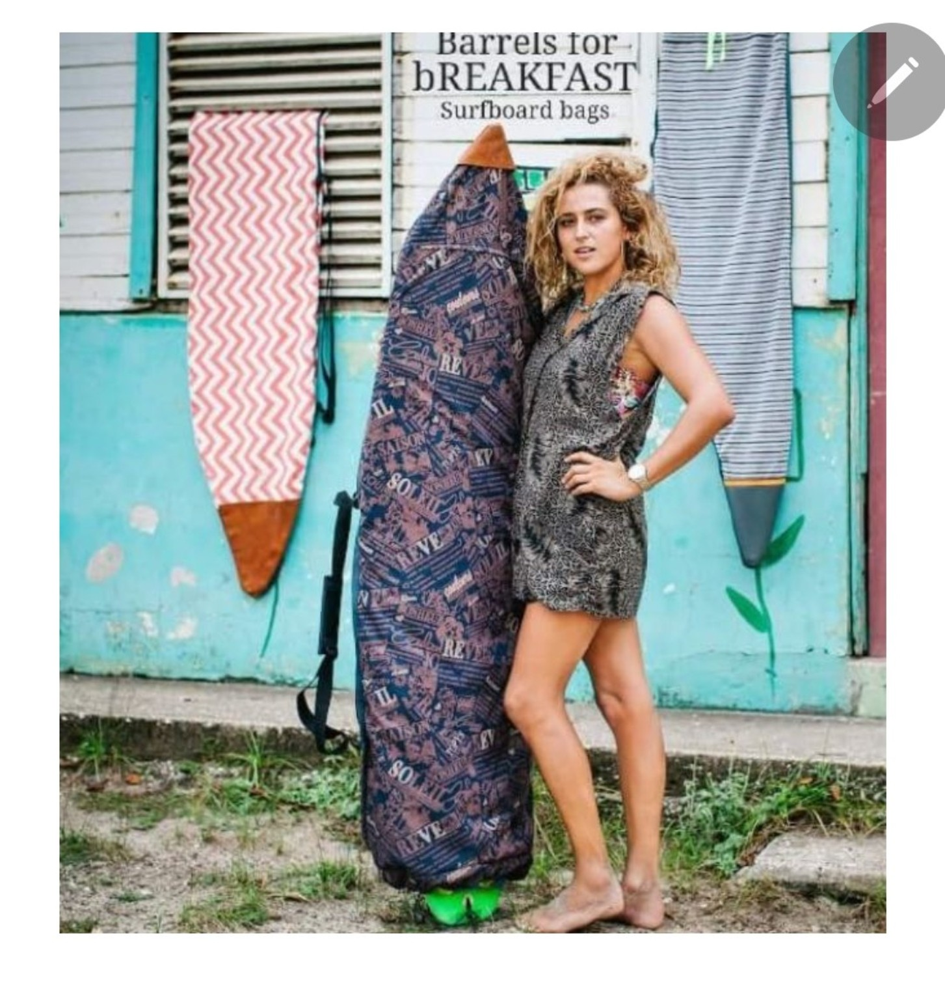
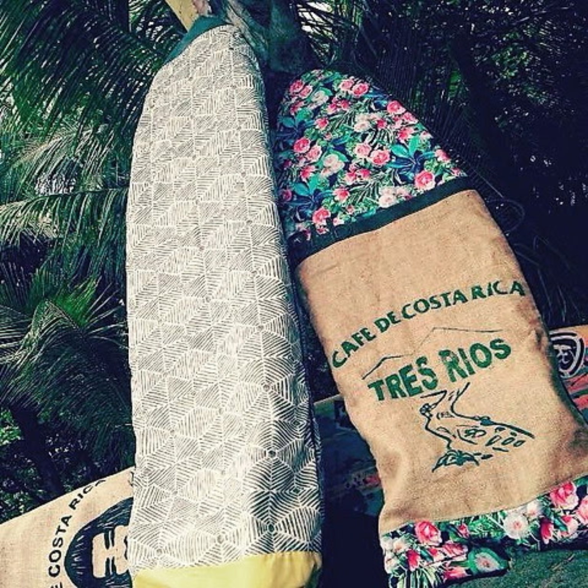
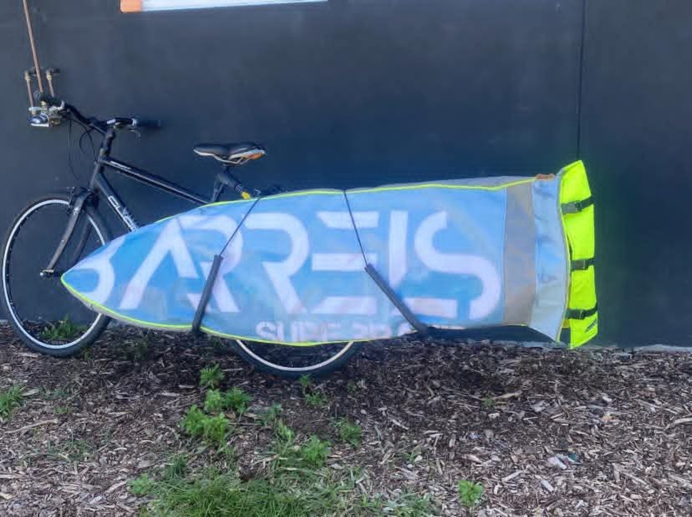
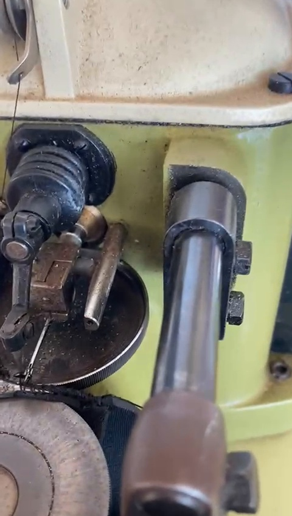
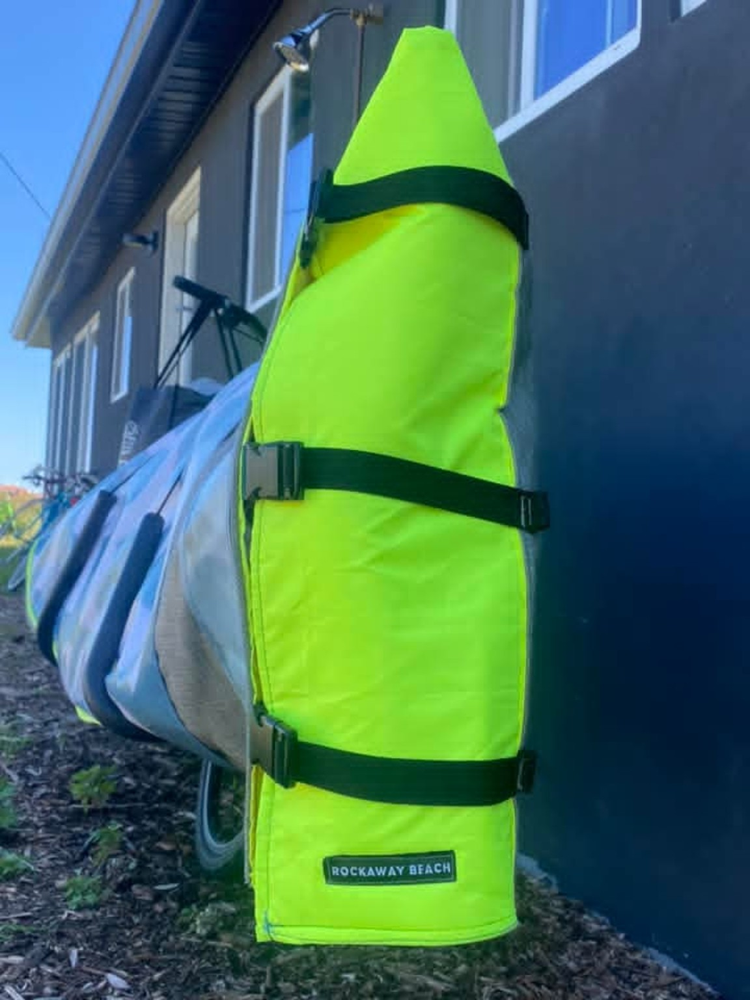
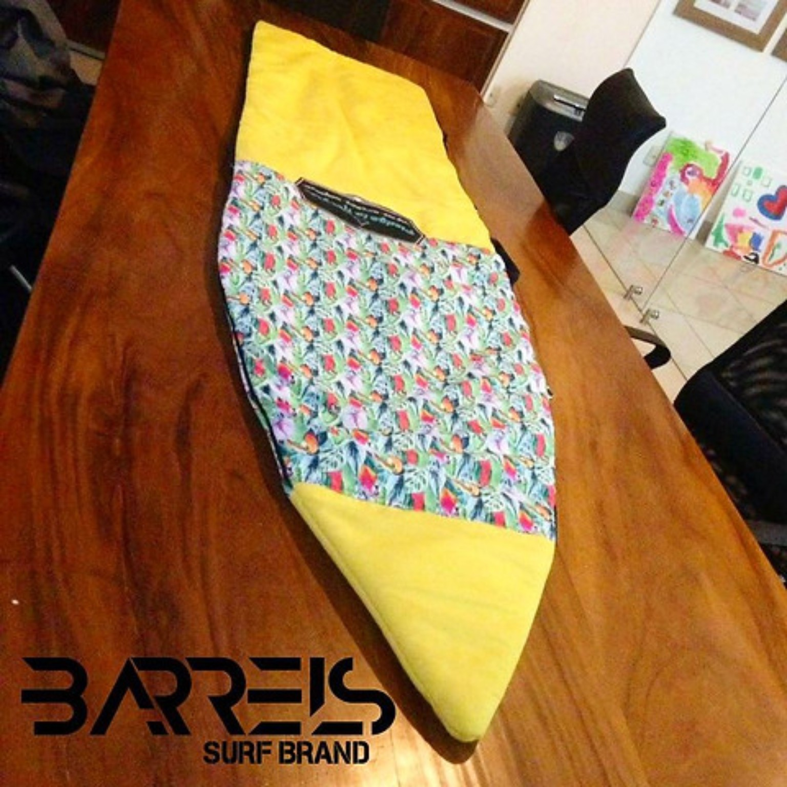

COSTA RICA · SURFBOARD BAGS
Surfboard bags.
Built different.
Choose the exterior. Tell us about your board and how you travel. Create a concept preview and save your design for the next production batch.
START YOUR DESIGNNo payment. No order commitment.

DESIGN LAB
Your board. Your exterior.
FOR BREAKFAST
Concept preview only. Final material placement, construction and appearance may vary, especially with reclaimed materials.




THE HISTORY
Playa Garza, Costa Rica.
About 17 years ago, in a little cabin in front of the ocean in Playa Garza, Guanacaste, Costa Rica, the first Barrels for Breakfast surfboard bags were made by hand.
The starting point was practical: a surfboard needed a bag, and the generic options available were not what the founder wanted to use. Costa Rican coffee sacks, old advertising banners, leftover fabrics and old towels became materials for making something different.
Surfers began bringing their boards to the cabin. Each board was measured, materials were selected, and the construction changed according to how the surfer planned to use it — lighter for local riding and bikes, more protection for travel.
The bags later went into surf shops in Playa Guiones. Some were sold before they even made it through the shop door. Over time, Barrels for Breakfast traveled beyond Costa Rica, including the Canary Islands, Ireland and Portugal.
Now the same product idea is being prepared for a new production batch in Costa Rica and made accessible to surfers internationally.
ORIGINAL BAGS
Built one board at a time.


NEXT BATCH
We're preparing production in Costa Rica.
Design the bag you would want. We'll use the saved designs to understand real demand while materials, manufacturing and production are being prepared.
CREATE YOURS